VIDEO Coffee Can Optical Illusion
2012-02-13T16:07:34Z
 As always, greeenpro continues to amaze us with his regular optical illusion video creations. One of his latest flicks includes a spooky coffee can that follows you as you move across the room. If you never saw this effect in action before, I promise you’ll be amazed!
As always, greeenpro continues to amaze us with his regular optical illusion video creations. One of his latest flicks includes a spooky coffee can that follows you as you move across the room. If you never saw this effect in action before, I promise you’ll be amazed!
Think it all started with the Little Green Dragon from our very beginnings, but I could be wrong. Einstein’s face illusion was as effective, and afterwards much more examples followed. One of my favorites was the “Janek’s Nuts” video. Check them all out once you finish viewing the video below! Oh, and BTW I just started building our presence on the mighty Google+ social network, so be sure to join our channel if you already haven’t! You can find some cool illusion gifs there, ones that were little impractical to feature on this site…
Warping Cushion Effect
2012-02-09T16:09:42Z
The Warping Cushion Effect is yet another optical illusion that proves how selected patterns are able to distort the reality we perceive. Just look at the diagonal lines below! Even though they are perfectly straight and parallel, as well as the rectangles they form intersecting, something obviously doesn’t seem right. The warping effect that makes the lines misbehave prevents us from seeing the picture in its true nature. But what is responsible for such an amazing effect? Is it the stripes, their color and alignment? What would you say has the strongest impact? Shoot!

Neon Heart Optical Illusion
2012-02-05T14:52:59Z
G. Sarcone really makes great optical illusions. If you don’t believe me, just check some of his stuff we featured earlier. Take his “Neon Heart illusion” for example – can you see the faint glow surrounding the heart? It might help if you squint your eyes a little. Well, I’m afraid the neon glow you perceived is just an illusion, and that the yellow unicolor background is same for each box in the grid. It’s just the part of the grid painted black that’s responsible for this. I think it has something to do with contrasts, but don’t take me for granted. BTW, the effect gets much stronger the more you shrink the image. If you wish, you can download our desktop widget (if you haven’t already) and see how it looks in the “Illusion of The Day” widget.
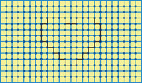
Sushi Wave Optical Illusion
2012-02-01T15:04:03Z
Apparently I was wrong when I said Beyonce does wonderful optical illusions. It turns out that the afterimage in my last post features Deepika Padukone (an Indian actress) instead. Thanks Toby! But let’s forget this little error I made, and concentrate on something more important - have you noticed something different about Mighty Optical Illusions? As promised, the new design is finally here! I know, I know… Only header and logo have changed, but this is something most of you complained about, and you were right. So what do you think of the changes? Are they for better or worse? What else do you think should be added? In general, how do you feel about the looks of our site now? What is the feeling you get the very first second you open this site? Be honest, please ;) Oh, and about the illusion… well, you’ll figure it out!
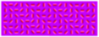
Who’s Hugging Whom?
2012-01-28T21:13:40Z
Here’s another accidental optical illusion photo that’s been circulating our Facebook channel lately. When I first saw it, it seemed as if the guy’s head wasn’t in proportion with rest of his body… Only then I realized his girlfriend wasn’t the one reading the newspapers. Instead, she is the one standing behind the couch and hugging her boyfriend. It becomes harder to see the illusion once you understand what is going on here… You decide if it’s good!
Cross Your Eyes To See Him!
2012-01-24T00:17:32Z
Richard Borwick discovered another phenomenal optical illusion this morning. Sure, we’ve seen the effect in action couple of times before, but then again – how often do you come across incredibly original optical illusions? Not often I guess… Still, what I’ve found so great about his discovery is how innocent it looks at first glance. Almost as if there was no evidence of the hidden illusion it holds… But wait! What if you blurred your vision just for a second? Go cross-eyed, blur your stare or simply step few feet back from your monitor. Now what you see? It has to be magic, right? Just when you’re done, be sure to share his identity…
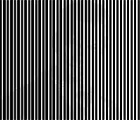
Frazz’ Optical Illusion Oak Tree
2012-01-20T21:26:06Z
Dunno whether you’ve heard of Frazz or not (I haven’t), but I guess it’s a popular comic in western hemisphere. From what I’ve learned, the comic regularly appears in over 200 newspapers worldwide, including the Los Angeles Times, Seattle Times, Chicago Tribune and Detroit News. Invented by Jef Mallett, it follows the adventures of an unexpected role model – an elementary-school janitor who’s also a Renaissance man. While he’s sweeping the hall, he’s whistling Beethoven. Or Lyle Lovett. He paints the woodwork in the classrooms; he paints a Da Vinci on the cafeteria wall. He’s a trusted authority figure who is every kid’s buddy. One such recent comic, included an optical illusion I thought you might like. How long does it take before you see it? Enjoy!
Ninja’s Colorful Shuriken Illusion
2012-01-17T19:10:59Z
A shuriken, our word of the day, is a traditional Japanese concealed weapon that was generally used for throwing, and sometimes stabbing or slashing. They are sharpened hand-held blades made from a variety of everyday items such as nails, knives, washers, and other flat plates of metal. When translated from Japanese, it literally means “sword hidden in the hand”. Here in the west it’s most commonly known as “throwing star”, “ninja star” or inaccurately as “Chinese stars”, though they took many different shapes and designs during the time they were used.
So what does all of this have to do with our latest optical illusion, you ask? Not much except visual similarity, I guess. I just thought it would be cool to mention ninjas and shurikens in the paragraph above. Ok, now let me explain how the illusion works – If you concentrate on the central dot in the animation below, after seeing the first frame consisting of two overlapped colored objects, you get the impression next two frames are showcasing isolated objects filled with appropriate fluorescent color! In reality, all frames except first lack color, and what you perceive as color afterwards is just an afterimage burnt in your retina! Don’t worry though, it only lasts couple of seconds…
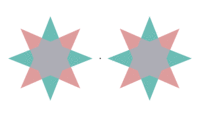
Concentrate on the black central dot, and see the colors magically appear!
Kaleidoscopic Motion Illusion
2012-02-11T22:07:31Z
 What I’m about to show you proves that there are still new optical illusions out there, just waiting to be discovered by some brave soul! On your right you may see a rotating wheel that seems to pulsate each time it aligns with the inner, star-shaped stationary object. You may also have noticed, that at the same time, the inner stationary shape seems to wiggle when the alignment occurs. Why is this happening, when it’s obvious that the inner shape is stationary, while the outer wheel’s rotation is perfectly smooth?
What I’m about to show you proves that there are still new optical illusions out there, just waiting to be discovered by some brave soul! On your right you may see a rotating wheel that seems to pulsate each time it aligns with the inner, star-shaped stationary object. You may also have noticed, that at the same time, the inner stationary shape seems to wiggle when the alignment occurs. Why is this happening, when it’s obvious that the inner shape is stationary, while the outer wheel’s rotation is perfectly smooth?
It turns out that the pulsations is caused by color assimilation, and the wiggling happens due to “ambiguous figure-ground segregation” (whatever this means), as Peter van der Helm discusses in his paper (2007).
Kurt Wenner’s 3D Wonderlands
2012-02-07T13:07:08Z
We’ve featured the work of Kurt Wenner before, but not nearly enough given the amazing talent of the artist. In fact, in many cases, Wenner’s art appears to be even more realistic than many of the other 3D chalk artists we feature because he frequently opts to include a back wall into his works, giving them even more dimension. Take this installation at the Waterloo Station in London, for example. Sure the man on his couch watching television has a lot of depth, but by adding a truck full of 3D animals crashing through the wall, it’s easy to feel just as shocked as the man in the artwork.
 Here’s another example incorporating a back wall to the artwork. Sure he could have stretched the piece over a long space of sidewalk to play with our perception, but by creating this ad for Celebrity Cruises with a back wall, the drawing looks right no mater what angle you view it from.
Here’s another example incorporating a back wall to the artwork. Sure he could have stretched the piece over a long space of sidewalk to play with our perception, but by creating this ad for Celebrity Cruises with a back wall, the drawing looks right no mater what angle you view it from.
 Of course, he doesn’t incorporate backdrops into artworks that don’t need them. In fact, adding a background to this reflecting pool illusion might actually distract from the amazing likeness of the actors portrayed in the sidewalk.
Of course, he doesn’t incorporate backdrops into artworks that don’t need them. In fact, adding a background to this reflecting pool illusion might actually distract from the amazing likeness of the actors portrayed in the sidewalk.
If you need further proof that Wenner is certainly one of the masters of his craft, consider the fact that he was the first 3D chalk artist to conceive of an interactive chalk drawing as seen in this photograph from 1987.
 Zip-lining across a city street can be fun, but it’s nothing compared to flying across wild terrain. For those that don’t have the time or money to get away from it all though, Wenner offers a grand compromise with this gorgeous canyon advertising the beauty of wild British Columbia.
Zip-lining across a city street can be fun, but it’s nothing compared to flying across wild terrain. For those that don’t have the time or money to get away from it all though, Wenner offers a grand compromise with this gorgeous canyon advertising the beauty of wild British Columbia.
 For more great works by Kurt Warner, don’t miss this piece in the Telegraph, or just visit his website.
For more great works by Kurt Warner, don’t miss this piece in the Telegraph, or just visit his website.
Impolite Fish Optical Illusion
2012-02-02T16:58:20Z
It’s one of those “When You See It…” type of photos that really had me puzzled at first. But then when it suddenly popped-out, I spilled my coffee all over myself. So how long did it take before you were able to see it? If you can ignore the meaning just for a second, I think you’ll agree it’s one of the better submissions we saw lately. Agree? Huge props to Michael J. Höller for bringing this to my attention via our FB channel.
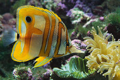
Beyonce Afterimage Illusion
2012-01-30T01:49:29Z
I don’t know much about Beyonce’s controversial pregnancy, but what I know for sure is that she makes one hell of an optical illusion! What I want you to do (once again) is to stare at this negative photo of her for a minute or so. Don’t forget to fixate the dots on her nose while you’re doing it. After some time, turn your eyes to a plain surface right next to the image (a ceiling or a blank wall would serve fine as well). A “negative of a negative“, a proper image in full-color if you will, will then appear momentarily. The more you blink, the better afterimage effect you’ll experience! If this version wasn’t enough, you may try the full size version located here.
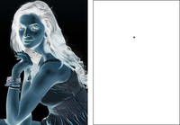
Heikie Weber’s Fantastic Flooring
2012-01-26T04:29:37Z
Imagine stepping into a room in the local art museum and suddenly not knowing where to step because the ground appears to be completely uneven. But that’s exactly what would happen if you happen to visit Kunstraum München in Munich, Germany. At least, if you happened to visit after Heikie Weber finished putting her installations up at the gallery.
That’s because the artist’s surreal creations convert ordinary rooms into mind-melding creations that seem impossible to walk on…of course, with art this fantastic, it seems a shame to trod on it anyway! But the most impressive part is how Heike does it…
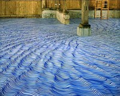From gentle, sea-like blue waves to red wobbling carpets that look even stranger when reflected in the mirror, Miss Weber’s creations turn something as simple as walking through a museum into a mind-altering experience.
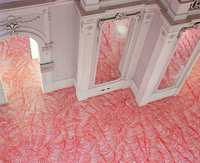Perhaps just as impressive as the actual outcome though, is the way in which Weber actually creates her masterpieces -one line at a time. That’s right, each of these massive installations were created with nothing more than a colored permanent marker and the steady hand of the artist. Imagine how time consuming these projects are, as some of the rooms used in her installations have measured almost 2,000 square feet in size. That’s a whole lot of markers and even more hand cramps.
Even so, the results are no doubt worth the hard work, as the flowing flooring really makes us stop and think about the ground we are walking upon. And isn’t the entire point of art to get the viewer to think?
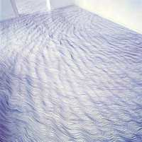
Wear Optical Illusions, Get Thin!
2012-01-22T03:48:59Z
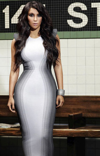
Kim Kardashian wearing Alexander McQueen's "Optical Illusion dress"
We all know that women prefer clothes which makes them look thin, emphasize their curves and enhance their figure. Spanx pantyhose, Wonderbras… You name it! But come on, no dress is really gonna take ten inches off your waist, or make you look twenty pounds lighter than you really are… Would it? Well, no ORDINARY dress would be able to do that!
But when designers discover fabulous world of optical illusions, and then start playing with such concepts, you’d be amazed what they could do to the female figure… only sky is the limit!
Take the dress on the right for example – simply by adding a well-known optical illusion pattern to the waist, the designer Alexander McQueen suddenly makes any woman wearing his dress appear much thinner in waist than she really is. Not to mention how he successfully reversed the effect in the breasts region, accomplishing curvaceous, hourglass appearance!
Really?! Who Else Does This?
The next dress by Stella McCartney is another extreme example of what optical illusions can do to a woman’s body… Sure, it’s an easy task to emphasize Kim Kardashian’s curves, but what if you’re not as curvaceous?
Using a similar concept that slimmed down Kim in the first image, McCartney’s dress takes the illusion even further – By using a slightly off-white color fabric on the bust, the “shadow effect” makes woman’s breasts appear much larger, immediately putting them in the spotlight (something I’m sure most gentlemen wouldn’t be eager to complain about). But that’s not the only enhancement here!
Kate Winslet premiered Stella McCartney’s dress at the Venice Film Festival, and it was so noticeably figure-altering that it was quickly dubbed “The Optical Illusion Dress” by the press. You can immediately recognize the black-fabric-on-the-sides trick, one that made Kate look like a corset model from the 18th century. An hourglass figure so slim, that when compared to her mortal anatomy, it’s actually shocking…
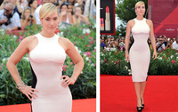So remember, optical illusions aren’t just theoretical creations used by artists. No, they are also quite practical when applied to real world settings by fashion designers who want to please their clientele by giving them an entirely new figure. Here are few more celebs wearing Stella McCartney’s dresses. Has it worked for all of them? You be the judge!
Deep In The Forest…
2012-01-19T23:14:20Z
Karl Kwasny is an Australian illustrator, currently based in Manhattan, New York. Few days ago one of our readers (thanks Neli!) sent me this illustration Karl made, followed by a poem which can be found immediately after the picture. I tend not to post skull illusions that often, probably cause we’ve seen so many, but occasionally such a nice item appears it would be shame had we left it aside. The illusion it hides is quite easy to see, and the story it holds is for you to imagine!
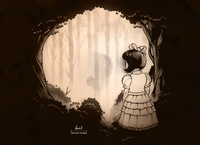
Deep in the forest, where heavy feet sink,
you mightn’t be quite as alone as you think!